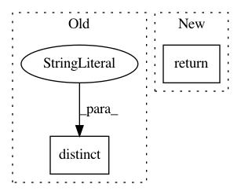

1542abe1e397f328be4532a60d542021aa43cc46,jarbas/chamber_of_deputies/twitter.py,Twitter,queryset,#Twitter#,33
Before Change
@property
def queryset(self):
last_term = Reimbursement.objects \
.exclude(term=None) \
.distinct("term") \
.order_by("-term") \
.values_list("term", flat=True) \
.first()
After Change
count = queryset.count()
if not count:
return queryset
top_quartile = count // 4 or 1
return queryset[:top_quartile]
In pattern: SUPERPATTERN
Frequency: 3
Non-data size: 2
Instances
Project Name: okfn-brasil/serenata-de-amor
Commit Name: 1542abe1e397f328be4532a60d542021aa43cc46
Time: 2019-02-27
Author: cuducos@users.noreply.github.com
File Name: jarbas/chamber_of_deputies/twitter.py
Class Name: Twitter
Method Name: queryset
Project Name: AlexsLemonade/refinebio
Commit Name: bd49927a7775cbb4c6c49a8610bfb49659439b25
Time: 2019-12-21
Author: davidsmejia@gmail.com
File Name: api/data_refinery_api/views.py
Class Name: TranscriptomeIndexList
Method Name: get_queryset
Project Name: okfn-brasil/serenata-de-amor
Commit Name: fea0802288563f301958b4cdeafd2562ded808b9
Time: 2018-09-19
Author: cuducos@users.noreply.github.com
File Name: jarbas/chamber_of_deputies/management/commands/tweet.py
Class Name: Command
Method Name: handle